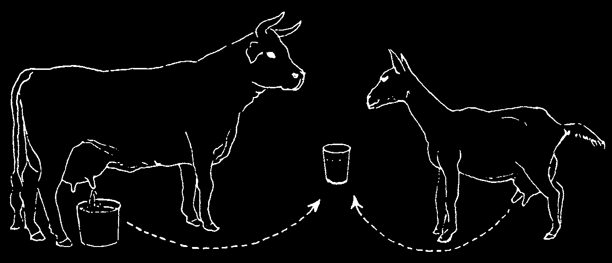
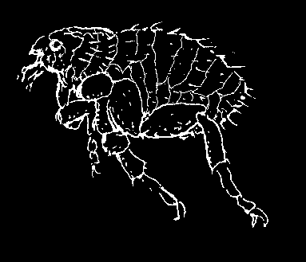
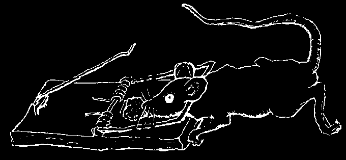
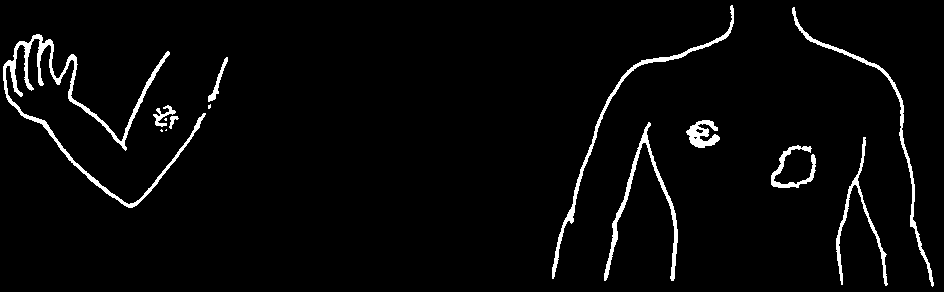
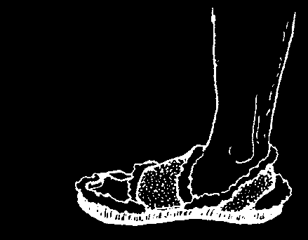
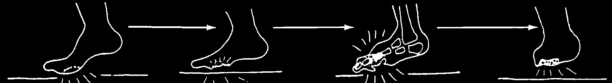

HOW TO AVOID MALARIA (AND DENGUE)
Malaria occurs more often during hot, rainy seasons. If everyone cooperates, it can be controlled. All these control measures should be practiced at once.
1. Avoid mosquitos.
2. Cooperate with the malaria
Sleep where there control workers are no mosquitos when they come or underneath a to your village. Tell bed net treated with them if anyone insecticide or under in the family has a sheet. Cover the had fevers and let baby’s cradle with treated them take blood mosquito netting or a thin cloth.
for testing.
3. If you suspect malaria, get
4. Destroy mosquitos and their young. Mosquitos treatment quickly. After you have breed in water that is not flowing. Clear ponds, been treated, pits, old cans, or broken mosquitos pots that collect water. Raise that bite you mosquito-eating fish in will not pass ponds or lakes. Fill the tops malaria on to of bamboo posts with sand others.
and keep water containers covered.
5. Malaria can also be prevented, or its effects greatly reduced, by taking anti-malaria medicines on a regular schedule. See pages 363 to 367.
DENGUE (BREAKBONE FEVER, DANDY FEVER)
This illness is sometimes confused with malaria. It is caused by a virus that is spread by mosquitos. In recent years it has become much more common in many countries. It often occurs in epidemics (many persons get it at the same time), usually during the hot, rainy season. A person can get dengue more than once.
Repeat illnesses are often worse. To prevent dengue, control mosquitos and protect against their bites, as described above.
Signs:
• Sudden high fever with chills.
• Severe body aches, headache, sore throat.
• Person feels very ill, weak, miserable.
• After 3 to 4 days person feels better for a few hours to 2 days.
• Then illness returns for 1 or 2 days, often with a rash that begins on hands and feet.
• The rash then spreads to arms, legs, and finally the body (usually not the face).
A severe form of dengue may cause bleeding into the skin (small dark spots), or dangerous bleeding inside the body. Go to a hospital immediately.
Treatment:
♦ No medicine cures it, but the illness goes away by itself in a few days.
♦ Rest, lots of liquids such as rehydration drink, fruit juice, or milk, acetaminophen (but not aspirin or ibuprofen) for fever and pain.
♦ In case of severe bleeding, treat for shock, if necessary (see p. 77).

BRUCELLOSIS (UNDULANT FEVER, MALTA FEVER)
This is a disease that comes from drinking fresh milk from infected cows or goats.
It may also enter the body through scrapes or wounds in the skin of persons who work with sick cattle, goats, or pigs, or by breathing it into the lungs.
PREVENT BRUCELLOSIS:
NEVER DRINK
UNBOILED MILK
Signs:
• Brucellosis may start with fever and chills, but it often begins very gradually with increasing tiredness, weakness, loss of appetite, headache, stomach ache, and sometimes joint pains.
• The fevers may be mild or severe. Typically, these begin with afternoon chills and end with sweating in the early morning. In chronic brucellosis, the fevers may stop for several days and then return. Without treatment, brucellosis may last for years.
• There may be swollen lymph nodes in the neck, armpits, and groin (p. 88).
Treatment:
♦ If you suspect brucellosis, get medical advice, because it is easy to confuse this disease with others, and the treatment is long and expensive.
♦ Treat with tetracycline, adults: two 250 mg. capsules 4 times a day for 3 weeks. For precautions, see page 356. Or use cotrimoxazole. (For dosage and precautions, see p. 357.)
Prevention:
♦ Drink only cow’s or goat’s milk that has been boiled or pasteurized. In areas where brucellosis is a problem, it is safer not to eat cheese made from unboiled milk.
♦ Be careful when handling cattle, goats, and pigs, especially if you have any cuts or scrapes.
♦ Cooperate with livestock inspectors who check to be sure your animals are healthy.
TYPHOID FEVER
Typhoid is an infection of the gut that affects the whole body. It is spread from feces-to-mouth in contaminated food and water and often comes in epidemics
(many people sick at once). Of the different infections sometimes called 'the fever’
(see p. 26), typhoid is one of the most dangerous.
Signs of typhoid:
First week:
1st day
37½° C
• It begins like a cold or flu.
• Headache, sore throat, and often a
2nd day
38° dry cough.
• The fever goes up and down, but rises
3rd day
38½° a little more each day until it reaches
40° or more.
4th day
39°
• Pulse is often relatively slow for the amount of fever present. Take the pulse and temperature every half hour.
5th day
39½°
If the pulse gets slower when the fever goes up, the person probably
6th day
40° has typhoid (see p. 26).
• Sometimes there is vomiting, diarrhea, or constipation.
Second week:
Third week:
• High fever, pulse relatively slow.
• If there are no complications,
• A few pink spots may appear on the body.
the fever and other symptoms
• Trembling.
slowly go away.
• Delirium (person does not think clearly or make sense).
• Weakness, weight loss, dehydration.
Treatment:
♦ Seek medical help.
♦ Give ciprofloxacin (p. 356), chloramphenicol (p. 356), ampicillin (p. 352), or cotrimoxazole (p. 357). Ask a health worker which medicine works best where you live.
♦ Lower the fever with cool wet cloths (see p. 76).
♦ Give plenty of liquids: soups, juices, and Rehydration Drink to avoid dehydration
(see p. 152).
♦ Give nutritious foods, in liquid form if necessary.
♦ The person should stay in bed until the fever is completely gone.
♦ If the person shits blood or develops signs of peritonitis (p. 94) or pneumonia
(p. 171), take her to a hospital at once.
Prevention:
♦ To prevent typhoid, care must be taken to avoid contamination of water and food by human feces. Follow the guidelines of personal and public hygiene in
Chapter 12. Make and use latrines. Be sure latrines are a safe distance from where people get drinking water.
♦ Cases of typhoid often appear after a flood or other disaster, and special care must be taken with cleanliness at these times. Be sure drinking water is clean.
If there are cases of typhoid in your village, all drinking water should be boiled.
Look for the cause of contaminated water or food.
(continued on the next page)




Prevention of typhoid: (continued)
♦ To avoid the spread of typhoid, a person who has the disease should stay in a separate room. No one else should eat or drink from the dishes he uses. His stools should be burned or buried in deep holes. Persons who care for him should wash their hands right afterwards.
♦ After recovering from typhoid some persons still carry the disease and can spread it to others. So anyone who has had typhoid should be extra careful with personal cleanliness and should not work in restaurants or where food is handled.
Sometimes ampicillin is effective in treating typhoid carriers.
TYPHUS
Typhus is an illness similar to but different from typhoid. The infection is transmitted by bites of:
lice ticks rat fleas
Signs:
• Typhus begins like a bad cold. After a week or more fever begins, with chills, headache, and pain in the muscles and chest.
• After a few days of fever a typical rash appears, first in the armpits and then on the body, then the arms and legs (but not on the face, palms of the hands, or soles of the feet). The rash looks like many tiny bruises.
• The fever lasts 2 weeks or more. Typhus is usually mild in children and very severe in old people. An epidemic form of typhus is especially dangerous.
• In typhus spread by ticks, there is often a large painful sore at the point of the bite, and the lymph nodes near the bite are swollen and painful.
Treatment:
♦ If you think someone may have typhus, get medical advice. Special tests are often needed.
♦ Give tetracycline, adults: 2 capsules of 250 mg. 4 times a day for 7 days (see p. 355). Chloramphenicol also works, but is riskier (p. 356).
Prevention:
♦ Keep clean. De-louse the whole family regularly.
♦ Remove ticks from your dogs and do not allow dogs in your house.
♦ Kill rats. Use cats or traps (not poison, which can be dangerous to other animals and children).
♦ Kill rat fleas. Do not handle dead rats. The fleas may jump off onto you.
Drown and burn the rats and their fleas. Put insecticide into rat holes and nests.



LEPROSY (HANSEN’S DISEASE)
This mildly infectious disease develops slowly, often over many years. It can only spread from persons who have untreated leprosy, to persons who have low resistance to the disease. In areas where leprosy is common, children should be checked every
6 to 12 months—especially children living with persons who have leprosy.
Signs: Leprosy can cause a variety of skin problems, loss of feeling, and paralysis of the hands and feet.
Examine the whole body for skin patches, especially the face, arms,
The first sign of leprosy is back, butt, and legs.
often a slowly growing patch on the skin that does not pale patch itch or hurt. At first, feeling without inside the patch may be clear border normal. Keep watching it. If feeling in the patch becomes
Patches are a different color from reduced or absent (see p. 38)
surrounding skin, but never ringworm-like patch with or it is probably leprosy.
completely white or scaly.
without raised border
Later signs differ according to the person’s natural resistance to the disease.
Watch out for:
• Tingling, numbness or loss of feeling in hands or feet. Or deformities or loss of feeling in skin patches.
clawed
• Slight weakness or toes deformities in the hands drop foot and feet.
Check for
• Swollen nerves that form thick thick nerves in these places.
cords under the skin. Nerves may or may not be painful when you press them.
Advanced sign may include:
loss of burns and scars where paralysis eyebrows feeling has been lost and deformity blindness of the hands and feet nose sometimes deformed ear lobe painless sores on thick and hands or feet lumpy
Treatment of leprosy: Leprosy is usually curable, but medicine must usually be taken for years. The best medicine is dapsone, combined with 1 or 2 other medicines (see pages 362 to 363). If a 'lepra reaction’ (fever, a rash, pain and perhaps swelling of hands and feet, or eye damage) occurs or gets worse while taking the medicine, keep taking it but get medical help.




Prevention of damage to hands, feet, and eyes: The large open sores often seen on the hands and feet of persons with leprosy are not caused by the disease itself and can be prevented. They result because, when feeling has been lost, a person no longer protects himself against injury.
For example, if a person with normal feeling walks a long way and gets a blister, it hurts, so he stops walking or limps.
But when a person with
So he keeps walking
Still without pain, the
In time the bone is destroyed leprosy gets a blister, it until the blister bursts infection gets deeper and the foot becomes more does not hurt.
and becomes infected.
and attacks the bone.
and more deformed.
1. Protect hands and feet from things that can cut, bruise, blister, or burn them:
Do not go barefoot, especially not where there are sharp stones or thorns. Wear shoes or sandals. Put soft padding inside shoes and under straps that may rub.
When working or cooking meals, wear gloves.
Never pick up an object that might be hot without first protecting your hand with a thick glove or folded cloth. If possible, avoid work that involves handling sharp or hot objects. Do not smoke.
2. At the end of each day (or more often if you work hard or walk far) examine your hands and feet very carefully—or have someone else examine them. Look for cuts, bruises, or thorns. Also look for spots or areas on the hands and feet that are red, hot, swollen or show the beginnings of blisters. If you find any of these, rest the hands or feet until the skin is completely normal again. This will help callous and strengthen the skin. Sores can be prevented.
3. If you have an open sore, keep the part with the sore very clean and at rest until it has completely healed. Take great care not to injure the area again.
4. Protect your eyes. Much eye damage comes from not blinking enough, because of weakness or loss of feeling. Blink your eyes often to keep them wet and clean. If you cannot blink well, close your eyes tightly often during the day, especially when dust blows. Wear sun glasses with side shades, and maybe a sun hat. Keep eyes clean and flies away.
If you do these things and begin treatment early, most deformities with leprosy can be prevented. For more information about Hansen’s disease, see Disabled Village
Children, Chapter 26.